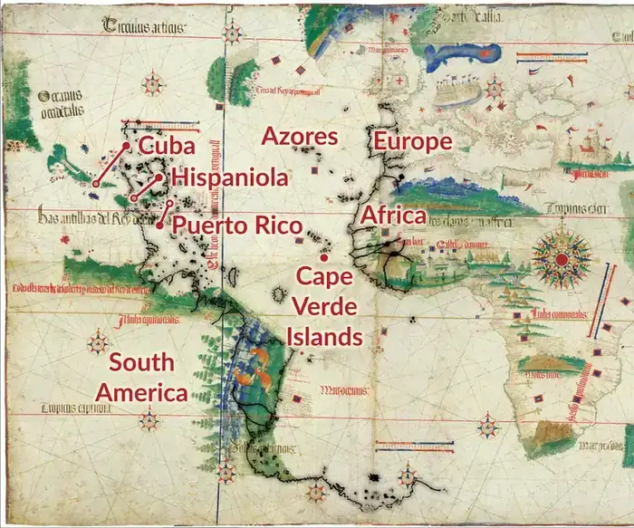
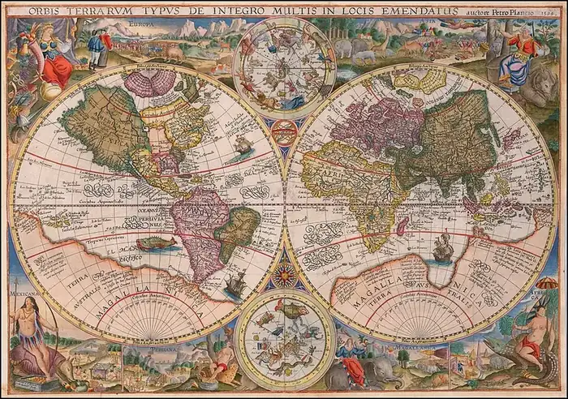
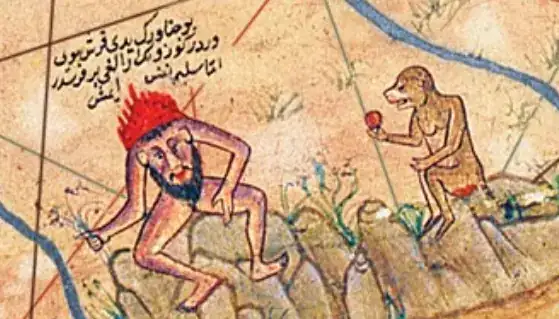

The map
Piri Reis was an Ottoman admiral and cartographer. His 1513 world map survives as a fragment on gazelle skin, showing the Atlantic Ocean, the coasts of South America and West Africa, and a southern landmass along the left edge. It was rediscovered in the Topkapı Palace in 1929, and it is genuinely impressive: the Caribbean is drawn with recognisable detail, and Piri Reis's own notes say he used charts captured from Columbus.
Maps, diagrams and images






That provenance is the first thing to understand. The map is a compilation, openly declared as such, of Portuguese and Spanish charts plus older sources — which is exactly what a competent sixteenth-century cartographer would produce.
The Antarctica claim
In 1966 Charles Hapgood argued that the southern portion of the map depicts the Antarctic coast under the ice, surveyed before it froze — which would require an unknown civilisation with seagoing capability, and an ice-free Antarctica, which last existed millions of years ago.
The reading does not survive inspection. The southern landmass on the map is continuous with South America, drawn as though the continent extends eastward — a common error in early sixteenth-century maps, and one consistent with Ptolemaic ideas about a southern landmass balancing the northern continents. Detailed comparisons find no correspondence between the map's southern coast and the actual subglacial topography of Antarctica. Hapgood's method involved rotating and rescaling the map until features aligned, which is the cartographic equivalent of fitting a curve to noise.
Documented: the map is genuine, dates to 1513, and draws on Columbus-era charts.
Documented: it is an unusually accurate Atlantic chart for its date.
Not supported: that it shows Antarctica, ice-free or otherwise.
Not supported: that it required a lost civilisation. Its declared sources explain what it contains.
The honest reading: a fine piece of sixteenth-century compilation, with the errors of its time, described in its own marginal notes.
Why it is in the archive
Because it is the most attractive of the map claims, and the one where the refutation is available in the object itself: Piri Reis wrote down where his information came from. The mystery is manufactured by not reading the annotations.
Open resources on this topic
- BookThe Piri Reis Map of 1513 — Gregory C. McIntosh · 2000 (Internet Archive, free to read)
- PapersOpen-access articles: DOAJ · PubMed Central · Internet Archive Scholar
- BooksPublic-domain and borrowable copies: Open Library · Project Gutenberg · Google Books
More images
Cite this page
Momin, S. (2026). The Piri Reis Map. The Larger World Archive. https://drsamonline.github.io/LARGE_GLOBE/piri-reis-map.htmlMomin, Sohil. “The Piri Reis Map.” The Larger World Archive, 2026, https://drsamonline.github.io/LARGE_GLOBE/piri-reis-map.html.Momin, Sohil. “The Piri Reis Map.” The Larger World Archive, 2026. https://drsamonline.github.io/LARGE_GLOBE/piri-reis-map.html.@misc{the2026piri,
author = {Momin, Sohil},
title = {The Piri Reis Map},
year = {2026},
howpublished = {The Larger World Archive},
url = {https://drsamonline.github.io/LARGE_GLOBE/piri-reis-map.html},
note = {Last reviewed 20 November 2026}
}Last reviewed 20 November 2026 · Corrections policy · this page is not peer reviewed
Sources for this page
- Wikipedia, “Piri Reis map” — the object, its sources and the claimsen.wikipedia.org
- Wikipedia, “Piri Reis” — the cartographer and admiralen.wikipedia.org
- Wikipedia, “Charles Hapgood” — the author of the Antarctica readingen.wikipedia.org
- Wikipedia, “Terra Australis” — the southern landmass idea the map inheritsen.wikipedia.org